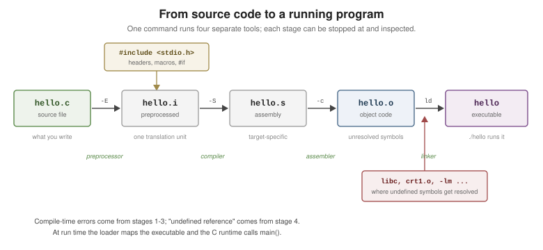

Getting Started
|
This content was generated with the assistance of AI and should be verified against the official documentation before being relied on in production. |
C is a small, statically-typed, compiled systems language: a handful of built-in types, explicit control over memory, and a thin standard library that maps closely onto what the machine and the operating system actually do. It has no garbage collector, no classes, no exceptions and no generics — what it has instead is a stable, standardized core that has outlived nearly every language designed to replace it, and an ABI that virtually every other language uses to talk to the outside world.
Where C Came From
C was designed by Dennis Ritchie at Bell Labs in the early 1970s, to write Unix in something other than assembly. The 1978 book The C Programming Language by Brian Kernighan and Dennis Ritchie — "K&R" — served as the language’s de-facto specification for a decade, and that pre-standard dialect is still called K&R C.
Since 1989 C has been a formal standard. It is maintained by ISO/IEC JTC1/SC22/WG14 (the WG14 working group), which publishes each edition as an ISO/IEC 9899 document and, importantly for day-to-day work, makes the near-final working drafts freely available — the published ISO text itself is a paid document.
The Standard Editions
| Edition | Document | What it introduced |
|---|---|---|
K&R C (1978) |
The C Programming Language, 1st ed. |
The original language: no prototypes, |
C89 / C90 |
ANSI X3.159-1989, then ISO/IEC 9899:1990 |
The first standard: function prototypes, |
C95 |
ISO/IEC 9899:1990/Amd 1:1995 |
Wide characters ( |
C99 |
ISO/IEC 9899:1999 |
|
C11 |
ISO/IEC 9899:2011 |
|
C17 / C18 |
ISO/IEC 9899:2018 |
No new features — a bug-fix edition of C11 (this is why |
C23 |
ISO/IEC 9899:2024 |
|
These pages target C23, and flag C23-only spellings with their C17/C11 fallbacks where it matters — see C Standards and C23 for the full transition story.
Compilers
C has many independent implementations; the three that matter most in practice are:
-
GCC — the GNU Compiler Collection. C23 support (as
-std=c23) is complete enough for everyday use from GCC 14; GCC 13 spells the same thing-std=c2x. -
Clang — the LLVM C family front end.
-std=c23from Clang 18; earlier versions use-std=c2x. Its diagnostics and its sanitizers are the main reason to reach for it. -
MSVC — Microsoft’s C/C++ compiler, with
/std:clatest. Its C support lagged for years and is now largely C11/C17-complete, with C23 arriving feature by feature.
Every example in this section was compiled with clang -std=c23 -Wall -Wextra.
"Hello, World"
#include <stdio.h>
int main(void)
{
puts("Hello, World");
return 0;
}Four things are worth naming even in a five-line program:
-
#include <stdio.h>is a preprocessor directive — it textually pulls in the declarations of the standard I/O functions before the compiler proper ever runs. -
int main(void)is the program’s entry point;(void)says "takes no arguments" (an empty()means the same thing in C23, but said "unspecified arguments" before it). -
putswrites a string plus a newline.printfis the formatted alternative, and the one to reach for as soon as there is a value to interpolate. -
return 0is the exit status handed back to the environment:0means success. Falling off the end ofmainis equivalent toreturn 0, but writing it is clearer.
A slightly less trivial version, showing C23’s bool keyword and printf formatting:
#include <stdio.h>
int main(void)
{
const char *name = "World";
bool polite = true; // bool, true and false are keywords in C23
printf("Hello, %s%s\n", name, polite ? "!" : "");
return 0;
}Compiling and Running
C’s build model is one of its defining features: a compiler turns each source file into an object file, and a linker stitches the object files and libraries into one executable. Nothing is resolved at run time that could be resolved before it.
$ clang -std=c23 -Wall -Wextra -o hello hello.c
$ ./hello
Hello, WorldThe flags are worth taking as a default:
-
-std=c23selects the language edition. Without it, compilers pick their own default (GCC 15 and Clang 18 default to a gnu17/gnu23-flavoured mode), so pin it rather than inherit it. -
-Wall -Wextraturn on the diagnostics that catch real bugs — unused results, sign-compare mistakes, uninitialized reads. Neither is on by default, and-Wallis not "all warnings" despite the name. -
-o hellonames the output; without it you geta.out.
Treat Warnings as Errors
C will happily compile code whose behavior is undefined. The single highest-value habit in the language is to refuse to accept a warning:
$ clang -std=c23 -Wall -Wextra -Werror -o hello hello.c-Werror promotes every warning to an error. For a real project, add the sanitizers during development too — they catch at run time what no compiler can see statically:
$ clang -std=c23 -Wall -Wextra -Werror -g -fsanitize=address,undefined -o hello hello.cSee Build and Tooling for the full flag catalogue, Make and CMake, and static analysis.
The Compilation Pipeline
clang -o hello hello.c looks like one step but is four, and each one can be stopped at and inspected — which
is how you debug a macro that expanded wrong or a symbol that failed to link.

$ clang -std=c23 -E hello.c -o hello.i # 1. preprocess only (macros, #include)
$ clang -std=c23 -S hello.i -o hello.s # 2. compile to assembly
$ clang -std=c23 -c hello.s -o hello.o # 3. assemble to an object file
$ clang hello.o -o hello # 4. link (adds the C runtime and libc)Two consequences of this model come up constantly:
-
A translation unit — one source file after preprocessing — is the compiler’s whole world. It knows nothing about the other files in the project except what a header declared. See Program Structure.
-
Undefined symbols surface at link time, not compile time.
undefined reference to 'sqrt'means the code compiled fine and libm was never linked (-lm).
See Also
-
Program Structure — translation units, headers, declarations vs. definitions, and
main's signatures. -
C Standards and C23 — what each edition added and how to write code that compiles on older ones.
-
Build and Tooling — warning flags, Make/CMake, sanitizers, debuggers and static analysis.
-
Cheat Sheet (PDF) — the whole section on one printable page.
-
C++: Getting Started — the same toolchain for C++23, whose examples share these compilers and flags.
References
-
WG14 N3220 — the C23 working draft (§5.1.2.2 "Hosted environment", §6.10 "Preprocessing directives").